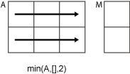

min
Minimum elements of array
Syntax
Description
M = min(A)
If
Ais a vector, thenmin(A)returns the minimum ofA.If
Ais a matrix, thenmin(A)is a row vector containing the minimum value of each column ofA.If
Ais a multidimensional array, thenmin(A)operates along the first dimension ofAwhose size does not equal 1, treating the elements as vectors. The size ofMin this dimension becomes1, while the sizes of all other dimensions remain the same as inA. IfAis an empty array whose first dimension has zero length, thenMis an empty array with the same size asA.If
Ais a table or timetable, thenmin(A)returns a one-row table containing the minimum of each variable. (since R2023a)
M = min(A,[],___,missingflag)A for
any of the previous syntaxes. For example,
min(A,[],"includemissing") includes all missing values
when computing the minimum. By default, min omits missing
values.
C = min(A,B,missingflag)
___ = min(___,"ComparisonMethod",
optionally specifies how to compare elements for any of the previous syntaxes.
For example, for a vector method)A = [-1 2 -9], the syntax
min(A,[],"ComparisonMethod","abs") compares the elements
of A according to their absolute values and returns a minimum
value of -1.
Examples
Input Arguments
Input array, specified as a scalar, vector, matrix, multidimensional array, table, or timetable.
If
Ais complex, thenmin(A)returns the complex number with the smallest magnitude. If magnitudes are equal, thenmin(A)returns the value with the smallest magnitude and the smallest phase angle.If
Ais a scalar, thenmin(A)returnsA.If
Ais a 0-by-0 empty array, thenmin(A)is as well.
If A has type categorical, then it
must be ordinal.
Data Types: double | single | int8 | int16 | int32 | int64 | uint8 | uint16 | uint32 | uint64 | logical | categorical | datetime | duration | table | timetable
Complex Number Support: Yes
Dimension to operate along, specified as a positive integer scalar. If you do not specify the dimension, then the default is the first array dimension whose size does not equal 1.
Dimension dim indicates the dimension whose
length reduces to 1. The size(M,dim) is 1,
while the sizes of all other dimensions remain the same, unless size(A,dim) is 0.
If size(A,dim) is 0, then min(A,dim) returns
an empty array with the same size as A.
Consider an m-by-n input matrix,
A:
min(A,[],1)computes the minimum of the elements in each column ofAand returns a1-by-nrow vector.![min(A,[],1) column-wise operation](min_dim_1.png)
min(A,[],2)computes the minimum of the elements in each row ofAand returns anm-by-1column vector.
Vector of dimensions, specified as a vector of positive integers. Each element represents a dimension of the input array. The lengths of the output in the specified operating dimensions are 1, while the others remain the same.
Consider a 2-by-3-by-3 input array, A. Then
min(A,[],[1 2]) returns a 1-by-1-by-3 array whose
elements are the minimums computed over each page of
A.

Missing value condition, specified as one of the values in this table.
| Value | Input Data Type | Description |
|---|---|---|
"omitmissing" | All supported data types | Ignore missing values in the input arrays,
and compute the minimum over fewer points. If all elements
in the operating dimension are missing, then the
corresponding element in M is
missing. |
"omitnan" | double, single,
duration | |
"omitnat" | datetime | |
"omitundefined" | categorical | |
"includemissing" | All supported data types | Include missing values in the input
arrays when computing the minimum. If any element in the
operating dimension is missing, then the corresponding
element in |
"includenan" | double, single,
duration | |
"includenat" | datetime | |
"includeundefined" | categorical |
Additional input array, specified as a scalar, vector, matrix, multidimensional array, table,
or timetable. Inputs A and B must
either be the same size or have sizes that are compatible (for example,
A is an M-by-N
matrix and B is a scalar or
1-by-N row vector). For more
information, see Compatible Array Sizes for Basic Operations.
If
AandBare both arrays, then they must be the same data type unless one is adouble. In that case, the data type of the other array can besingle,duration, or any integer type.If
AandBare ordinalcategoricalarrays, they must have the same sets of categories with the same order.If either
AorBis a table or timetable, then the other input can be an array, table, or timetable.
If B has type categorical, then it must be
ordinal.
Data Types: double | single | int8 | int16 | int32 | int64 | uint8 | uint16 | uint32 | uint64 | logical | categorical | datetime | duration | table | timetable
Complex Number Support: Yes
Comparison method for numeric input, specified as one of these values:
"auto"— For a numeric input arrayA, compare elements byreal(A)whenAis real, and byabs(A)whenAis complex."real"— For a numeric input arrayA, compare elements byreal(A)whenAis real or complex. IfAhas elements with equal real parts, then useimag(A)to break ties."abs"— For a numeric input arrayA, compare elements byabs(A)whenAis real or complex. IfAhas elements with equal magnitude, then useangle(A)in the interval (-π,π] to break ties.